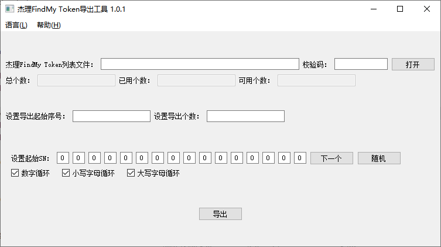
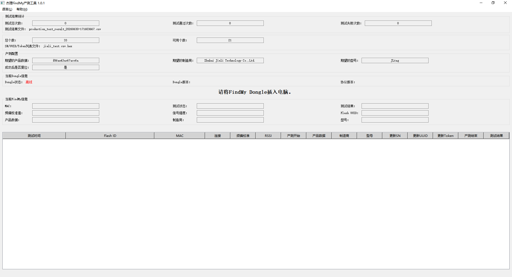

3. FindMy Production Test Tool Suite
3.1. Tool overview
The FindMy Production Test Tool Suite contains the following two tools:
FindMy Token Export Tool – generates the Token files required by the Jieli programmers and the Jieli FindMy Production Test Tool.
FindMy Production Test Tool – writes the Token files into FindMy devices and runs production line tests.
3.2. FindMy Token Export Tool
This tool generates Token files (.hex) from the CSV files exported by Jieli MFiTools.exe, for use in programming and production testing.

3.2.1. Features
Input file: the CSV file exported by the Jieli
MFiTools.exetool.Output file: a Token file with the
.hexextension (do not change the extension).Log file: after the export, a log file with the
.export.logextension is generated automatically. It records the following information:Export time
Starting SN
Values of the export options
Start index of the exported Tokens
Total number of exported Tokens
Auto-recall: when the tool starts, it reads the previous log file and automatically restores the export start index (导出起始序号) and the export options (导出勾选项).
3.2.2. How to use
Double-click FindMy Token Export Tool (FindMy Token 导出工具) to run it.
The tool automatically reads the previous export log (if any) and restores the start index and the checked options.
Click "Browse" (浏览) and select the CSV file exported by
MFiTools.exe.Change the export start index (导出起始序号) and the export options (导出勾选项) as needed.
Click the Export (导出) button. The tool generates the following files in the same directory:
.hexToken file.export.logexport log file
Check the log file to confirm that the export time, starting SN, number of Tokens, etc. are correct.
3.2.3. Data format
Each line of data in the .hex file has the following format (big-endian byte order):
Byte range |
Content |
Description |
|---|---|---|
0 ~ 3 |
Fixed identifier |
|
4 ~ 5 |
Checksum |
CRC16 of all subsequent data starting from byte 6 |
6 ~ 7 |
Total length |
Total number of bytes in the line (including the fixed identifier and the checksum) |
8 ~ 9 |
Number of data segments |
Number of data segments that follow |
10 ~ 11 |
Format version |
The current version is |
12 ~ 13 |
Offset 1 |
Offset of the first data segment (counted from byte 0) |
14 ~ 15 |
Length 1 |
Length of the first data segment |
16 ~ 17 |
Data ID 1 |
ID of the first data segment |
18 ~ 19 |
Offset 2 |
Offset of the second data segment |
20 ~ 21 |
Length 2 |
Length of the second data segment |
22 ~ 23 |
Data ID 2 |
ID of the second data segment |
… |
… |
And so on; each data segment takes 6 bytes (offset + length + ID) |
3.3. FindMy Production Test Tool
This tool writes the Token files generated by the FindMy Token Export Tool into FindMy devices and runs a series of production line tests.

3.3.1. Features
Supports a frequency offset calibration test with configurable minimum/maximum allowed values.
Supports a signal strength test with a configurable allowed signal strength range.
Supports product data verification, which compares the data reported by the device with the expected values.
Supports manufacturer name verification, which ensures that the manufacturer name returned by the device is as expected.
Supports model verification, which checks that the product model returned by the device is correct.
Supports SN / UUID / Token update; the data is written by importing the .hex file generated by the Token Export Tool.
Supports firmware upgrade during the production test; the upgrade file can be specified.
Supports SN output (currently only over TCP), which sends the SN to a specified server.
Supports configuring the action after the production test passes: either only exit production test mode, or exit and then perform a soft power-off.
Supports production test result logs and debug logs; the file name prefix, maximum size and number of rolling files can be configured separately for each log.
3.3.2. How to use
Edit the findmy_config.ini configuration file according to your production test requirements (see the configuration description below).
Double-click the FindMy Production Test Tool to run it; the program loads the configuration automatically.
Plug in the Jieli FindMy Dongle and wait for the tool to recognize it.
Place the FindMy device to be tested on the FindMy Dongle.
The tool automatically performs the tests and update operations; wait until the progress is complete.
Handle the FindMy device according to the test result shown in the window ("Pass" (通过) or "Fail" (失败)).
Repeat steps 4 to 6.
3.3.3. Configuration file
The tool is configured through findmy_config.ini. The settings and their descriptions are as follows:
# Frequency offset calibration test
[freq_offset_calib_test]
enable = 1
min_value = -10
max_value = 10
# Signal strength test
[rssi_test]
enable = 1
min_value = -100
max_value = 100
# Product data test
[product_data_test]
enable = 1
expected_data = f86ae43ac67acc6a
# Manufacturer test
[manufacturer_test]
enable = 1
expected_data = "Zhuhai Jieli Technology Co.,Ltd."
# Model test
[model_test]
enable = 1
expected_data = JLtag
# Update SN / UUID / Token
[sn_uuid_token_update]
enable = 1
file = jieli_test.csv.hex
# FindMy upgrade file configuration
[upgrade]
enable = 0
firmware = db_update_data.bin
# SN output (currently only TCP is supported)
[sn_print]
enable = 0
type = 1
server = 127.0.0.1
port = 8888
# Action performed after the production test passes
# 0 - Only exit production test mode
# 1 - Exit production test mode and enter soft power-off
[post_test_action]
enable = 1
action = 1
# Production test result log
[test_log]
enable = 1
file_prefix = production_test_result
max_size = 1M
max_count = 9
# Production test debug log
[debug_log]
enable = 0
file = debug_log.txt
max_size = 1M
max_count = 9
Summary of each configuration section:
freq_offset_calib_test – frequency offset calibration test; the minimum/maximum allowed values can be set.
rssi_test – signal strength test; the allowed range can be set.
product_data_test – product data verification; checks whether the data reported by the device matches expected_data.
manufacturer_test – manufacturer name verification.
model_test – product model verification.
sn_uuid_token_update – SN/UUID/Token update; specifies the .hex file generated by the Token Export Tool.
upgrade – whether to upgrade the firmware during the production test, and the upgrade file to use.
sn_print – whether to output the SN information over the network (TCP).
post_test_action – action performed after a successful production test: only exit production test mode, or exit and then perform a soft power-off.
test_log – configuration of the production test result log (file name prefix, size limit, number of rolling files).
debug_log – configuration of the debug log.